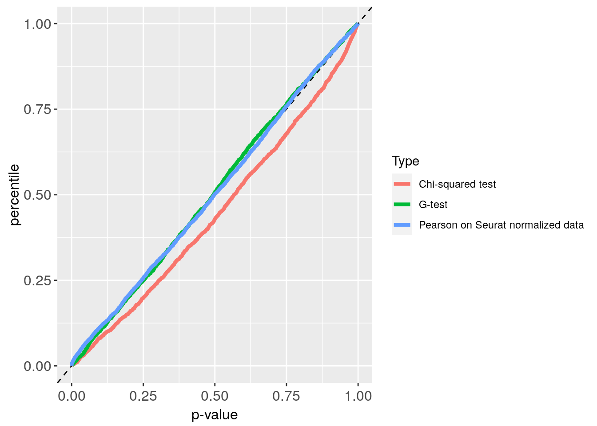
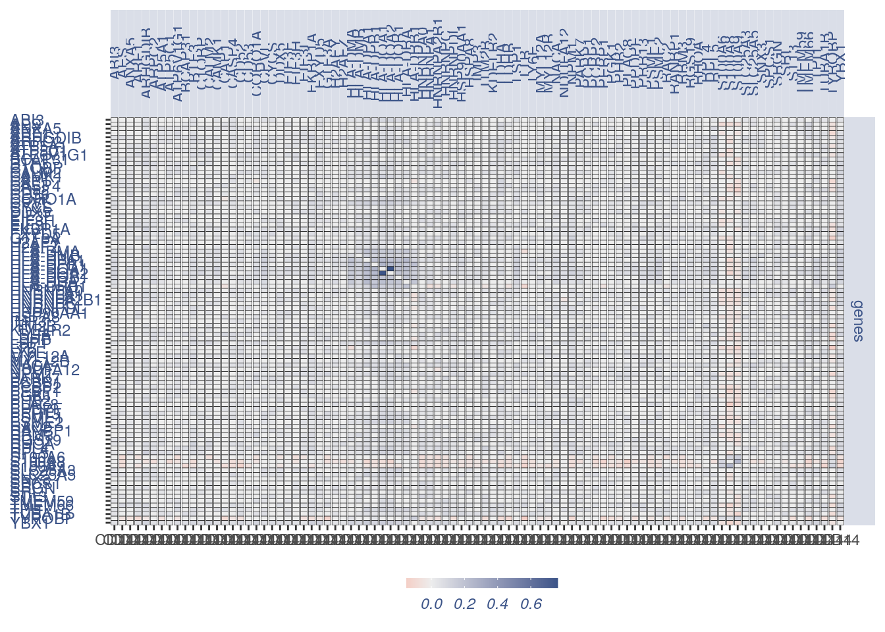
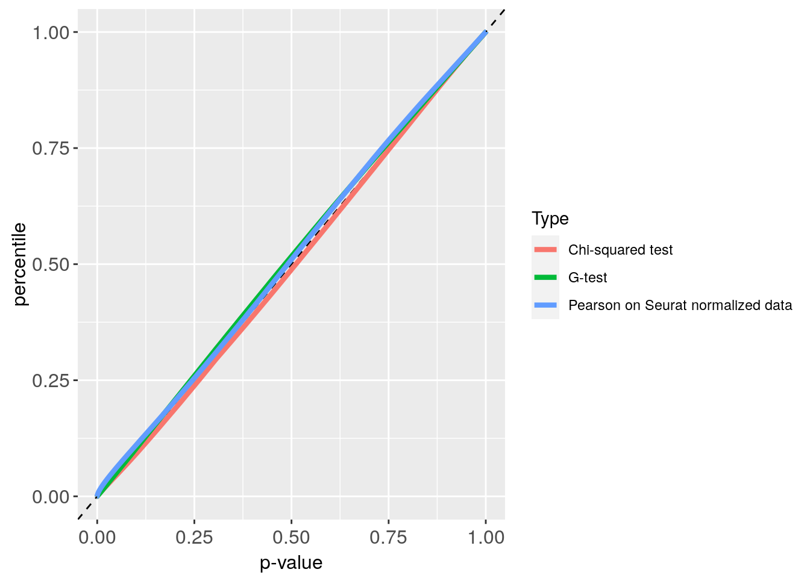

Negative dataset analysis
library(ggplot2)
library(ggrepel)
library(COTAN)
library(patchwork)
p_value_plot <- function(p_values, obj) {
p_values[lower.tri(p_values, diag = TRUE)] <- NA
p_values2 = as.data.frame(as.table(as.matrix(p_values)))
if (nrow(p_values2) > 10000) {
p_values2 = p_values2[sample(nrow(p_values2),
(nrow(p_values2)/20)), ]
}
p_values2 = p_values2[complete.cases(p_values2),
]
p_values2 = p_values2[order(p_values2$Freq,
decreasing = F), ]
p_values2$n = c(1:nrow(p_values2))/nrow(p_values2)
p_values = get.pval(obj, type_stat = "G")
p_values[lower.tri(p_values, diag = TRUE)] <- NA
p_values3 = as.data.frame(as.table(as.matrix(p_values)))
if (nrow(p_values3) > 10000) {
p_values3 = p_values3[sample(nrow(p_values3),
(nrow(p_values3)/20)), ]
}
p_values3 = p_values3[complete.cases(p_values3),
]
p_values3 = p_values3[order(p_values3$Freq,
decreasing = F), ]
p_values3$n = c(1:nrow(p_values3))/nrow(p_values3)
print(dim(p_values2))
print(dim(p_values3))
p_values2$Type = "Chi-squared test"
p_values3$Type = "G-test"
p_values = rbind(p_values2, p_values3)
plot_p = ggplot(p_values, aes(x = Freq,
y = n, colour = Type)) + theme(axis.text.x = element_text(size = 12,
angle = 0, hjust = 0.5, vjust = 0.5,
face = "plain"), axis.text.y = element_text(size = 12,
angle = 0, hjust = 0, vjust = 0.5,
face = "plain"), axis.title.x = element_text(size = 12,
angle = 0, hjust = 0.5, vjust = 0,
face = "plain"), axis.title.y = element_text(size = 12,
angle = 90, hjust = 0.5, vjust = 0.5,
face = "plain")) + labs(x = "p-value",
y = "percentile") + geom_line(size = 1.5)
return(plot_p)
}
plot.GDI.density <- function(GDI.df) {
si = 11
mycolours <- c(Constitutive = "#00A087FF",
dif = "#E64B35FF", normal = "#8491B4B2")
themex = theme(axis.text.x = element_text(size = si,
angle = 90, hjust = 0.5, vjust = 0.5,
face = "plain", colour = "#3C5488FF"),
axis.text.y = element_blank(), axis.title.x = element_blank(),
axis.title.y = element_text(size = si,
angle = 90, hjust = 0.5, vjust = 0.5,
face = "plain", colour = "#3C5488FF"),
legend.position = "none")
themey = theme(axis.text.y = element_text(size = si,
angle = 0, hjust = 0.5, vjust = 0.5,
face = "plain", colour = "#3C5488FF"),
axis.title.x = element_text(size = si,
angle = 0, hjust = 0.5, vjust = 0.5,
face = "plain", colour = "#3C5488FF"),
axis.text.x.bottom = element_blank(),
axis.title.y = element_blank(), legend.position = "none")
f1 = ggplot(GDI.df, aes(x = sum.raw.norm,
y = GDI)) + geom_point(alpha = 0.4,
color = "#8491B4B2", size = 2.5)
GDI.df_lin = f1 + geom_hline(yintercept = 1.5,
linetype = "dotted", color = "red",
size = 1) + scale_color_manual("Status",
values = mycolours) + scale_fill_manual("Status",
values = mycolours) + xlab("log normalized counts") +
ylab("GDI") + theme(axis.text.x = element_text(size = si,
angle = 0, hjust = 0.5, vjust = 0.5,
face = "plain", colour = "#3C5488FF"),
axis.text.y = element_text(size = si,
angle = 0, hjust = 0, vjust = 0.5,
face = "plain", colour = "#3C5488FF"),
axis.title.x = element_text(size = si,
angle = 0, hjust = 0.5, vjust = 0,
face = "plain", colour = "#3C5488FF"),
axis.title.y = element_text(size = si,
angle = 90, hjust = 0.5, vjust = 0.5,
face = "plain", colour = "#3C5488FF"),
legend.title = element_blank(), legend.text = element_text(color = "#3C5488FF",
face = "italic"), legend.position = "none")
xdensityGDI.df <- ggplot(GDI.df, aes(sum.raw.norm)) +
geom_density(alpha = 0.5, fill = "#8491B4B2",
colour = "#8491B4B2") + themex
ydensityGDI.df <- ggplot(GDI.df, aes(GDI)) +
geom_density(alpha = 0.5, fill = "#00A087FF",
colour = "#00A087FF") + themey +
coord_flip()
GDI.df_lin = xdensityGDI.df + plot_spacer() +
GDI.df_lin + ydensityGDI.df + plot_layout(ncol = 2,
nrow = 2, widths = c(4, 1), heights = c(1,
4))
return(GDI.df_lin)
}1 Technical negative dataset: ERCC 10x
p_values_ERCC = get.pval(ERCC)
#> NULL
#> [1] "Get p-values genome wide on columns genome wide on rows"
#> [1] "Using function S"
#> [1] "function to generate S "
Plot_ERCC = p_value_plot(p_values_ERCC, ERCC)
#> NULL
#> [1] "Get p-values genome wide on columns genome wide on rows"
#> [1] "Using function G"
#> [1] "function to generate G "
#> [1] "Generating contingency tables for observed data"
#> [1] "mu estimator creation"
#> [1] "expected contingency tables creation"
#> [1] "The distance between estimated n of zeros and observed number of zero is 0.00446406311693362 over 66"
#> [1] "Done"
#> [1] "G estimation"
#> [1] 2145 4
#> [1] 2145 4
Plot_ERCC
GDI plot with density
GDI_ercc = get.GDI(ERCC)
#> [1] "function to generate GDI dataframe"
#> [1] "Using S"
#> [1] "function to generate S "
plot.GDI.density(GDI_ercc)
2 Biological negative dataset: CD14+
p_values_CD14 = get.pval(CD14)
#> NULL
#> [1] "Get p-values genome wide on columns genome wide on rows"
#> [1] "Using function S"
#> [1] "function to generate S "
Plot_CD14 = p_value_plot(p_values_CD14, obj = CD14)
#> NULL
#> [1] "Get p-values genome wide on columns genome wide on rows"
#> [1] "Using function G"
#> [1] "function to generate G "
#> [1] "Generating contingency tables for observed data"
#> [1] "mu estimator creation"
#> [1] "expected contingency tables creation"
#> [1] "The distance between estimated n of zeros and observed number of zero is 0.0486027452293039 over 7850"
#> [1] "Done"
#> [1] "G estimation"
#> [1] 1541160 4
#> [1] 1540476 4
Plot_CD14
GDI plot with density
GDI_CD14 = get.GDI(CD14)
#> [1] "function to generate GDI dataframe"
#> [1] "Using S"
#> [1] "function to generate S "
plot.GDI.density(GDI_CD14)genes = list(genes = rownames(GDI_CD14[GDI_CD14$GDI >
1.5 & GDI_CD14$sum.raw.norm > 5 & GDI_CD14$exp.cells >
2.5, ]))
plot_heatmap(df_genes = genes, sets = 1,
conditions = "CD14", dir = "Data/negative_datasets/")
#> [1] "plot heatmap"
#> [1] "Loading condition CD14"
#> [1] "ABI3" "AES" "ANXA5" "ARF1" "ARHGDIB" "ARPC2"
#> [7] "ATP5A1" "ATP5C1" "ATP6V1G1" "BCAP31" "BTF3" "C1QBP"
#> [13] "CALM2" "CAMK1" "CAP1" "CASP4" "CD52" "CD53"
#> [19] "CORO1A" "CPVL" "CYCS" "DDX5" "EIF3F" "EIF3H"
#> [25] "EIF3I" "FKBP1A" "FXYD5" "GTF3A" "H2AFY" "H2AFZ"
#> [31] "HLA-DMA" "HLA-DMB" "HLA-DPA1" "HLA-DPB1" "HLA-DQA1" "HLA-DQA2"
#> [37] "HLA-DQB1" "HLA-DRA" "HLA-DRB1" "HNRNPA0" "HNRNPA1" "HNRNPA2B1"
#> [43] "HNRNPC" "HNRNPDL" "HSP90AA1" "HSPA8" "IMP3" "ITM2B"
#> [49] "KDELR2" "LDHA" "LDHB" "LSP1" "LTB" "LY6E"
#> [55] "MYL12A" "MYL12B" "NACA" "NDUFA12" "NPM1" "PARK7"
#> [61] "PCBP1" "PCBP2" "PEBP1" "PGK1" "PHB2" "PLAC8"
#> [67] "PPDPF" "PRR13" "PSME1" "PSME2" "RAC2" "RANBP1"
#> [73] "RBM3" "RGS19" "RHOA" "RPL4" "RPL5" "S100A6"
#> [79] "S100A8" "S100A9" "SLC25A3" "SLC25A5" "SNX3" "SPCS1"
#> [85] "SRGN" "SRI" "ST13" "TMEM59" "TMEM66" "TPI1"
#> [91] "TUBA1B" "TYROBP" "YBX1"
#> [1] "Get p-values on a set of genes on columns on a set of genes on rows"
#> [1] "Using function S"
#> [1] "function to generate S "
#> [1] "genes"
#> [1] "min coex: -0.00306002035570612 max coex 0.0155984592652918"
3 Syntetic negative dataset: 4000 cells
p_values_CE4000 = get.pval(CE4000)
#> NULL
#> [1] "Get p-values genome wide on columns genome wide on rows"
#> [1] "Using function S"
#> [1] "function to generate S "
Plot_CE4000 = p_value_plot(p_values_CE4000,
obj = CE4000)
#> NULL
#> [1] "Get p-values genome wide on columns genome wide on rows"
#> [1] "Using function G"
#> [1] "function to generate G "
#> [1] "Generating contingency tables for observed data"
#> [1] "mu estimator creation"
#> [1] "expected contingency tables creation"
#> [1] "The distance between estimated n of zeros and observed number of zero is 0.0574510036838693 over 11670"
#> [1] "Done"
#> [1] "G estimation"
#> [1] 3404815 4
#> [1] 3403113 4
Plot_CE4000
GDI_CE4000 = get.GDI(CE4000)
#> [1] "function to generate GDI dataframe"
#> [1] "Using S"
#> [1] "function to generate S "
plot.GDI.density(GDI_CE4000)
4 Syntetic negative dataset: 800 cells
p_values_CE800 = get.pval(CE800)
#> NULL
#> [1] "Get p-values genome wide on columns genome wide on rows"
#> [1] "Using function S"
#> [1] "function to generate S "
Plot_CE800 = p_value_plot(p_values_CE800,
obj = CE800)
#> NULL
#> [1] "Get p-values genome wide on columns genome wide on rows"
#> [1] "Using function G"
#> [1] "function to generate G "
#> [1] "Generating contingency tables for observed data"
#> [1] "mu estimator creation"
#> [1] "expected contingency tables creation"
#> [1] "The distance between estimated n of zeros and observed number of zero is 0.0551150644366422 over 11498"
#> [1] "Done"
#> [1] "G estimation"
#> [1] 3304739 4
#> [1] 3303602 4
Plot_CE800
sessionInfo()
#> R version 4.0.4 (2021-02-15)
#> Platform: x86_64-pc-linux-gnu (64-bit)
#> Running under: Ubuntu 18.04.5 LTS
#>
#> Matrix products: default
#> BLAS: /usr/lib/x86_64-linux-gnu/openblas/libblas.so.3
#> LAPACK: /usr/lib/x86_64-linux-gnu/libopenblasp-r0.2.20.so
#>
#> locale:
#> [1] LC_CTYPE=en_US.UTF-8 LC_NUMERIC=C
#> [3] LC_TIME=en_US.UTF-8 LC_COLLATE=en_US.UTF-8
#> [5] LC_MONETARY=en_US.UTF-8 LC_MESSAGES=en_US.UTF-8
#> [7] LC_PAPER=en_US.UTF-8 LC_NAME=C
#> [9] LC_ADDRESS=C LC_TELEPHONE=C
#> [11] LC_MEASUREMENT=en_US.UTF-8 LC_IDENTIFICATION=C
#>
#> attached base packages:
#> [1] stats graphics grDevices utils datasets methods base
#>
#> other attached packages:
#> [1] patchwork_1.1.1 COTAN_0.1.0 ggrepel_0.9.1 ggplot2_3.3.3
#>
#> loaded via a namespace (and not attached):
#> [1] Rcpp_1.0.6 lattice_0.20-41 circlize_0.4.12
#> [4] tidyr_1.1.2 png_0.1-7 assertthat_0.2.1
#> [7] digest_0.6.27 utf8_1.2.1 R6_2.5.0
#> [10] stats4_4.0.4 evaluate_0.14 highr_0.8
#> [13] pillar_1.5.1 basilisk_1.2.1 GlobalOptions_0.1.2
#> [16] rlang_0.4.10 jquerylib_0.1.3 S4Vectors_0.28.1
#> [19] GetoptLong_1.0.5 Matrix_1.3-2 reticulate_1.18
#> [22] rmarkdown_2.7 labeling_0.4.2 stringr_1.4.0
#> [25] munsell_0.5.0 compiler_4.0.4 xfun_0.22
#> [28] pkgconfig_2.0.3 BiocGenerics_0.36.0 shape_1.4.5
#> [31] htmltools_0.5.1.1 tidyselect_1.1.0 tibble_3.1.0
#> [34] IRanges_2.24.1 matrixStats_0.58.0 fansi_0.4.2
#> [37] crayon_1.4.0 dplyr_1.0.4 withr_2.4.1
#> [40] rappdirs_0.3.3 basilisk.utils_1.2.2 grid_4.0.4
#> [43] jsonlite_1.7.2 gtable_0.3.0 lifecycle_1.0.0
#> [46] DBI_1.1.1 magrittr_2.0.1 formatR_1.8
#> [49] scales_1.1.1 stringi_1.5.3 farver_2.1.0
#> [52] bslib_0.2.4 ellipsis_0.3.1 filelock_1.0.2
#> [55] generics_0.1.0 vctrs_0.3.6 rjson_0.2.20
#> [58] RColorBrewer_1.1-2 tools_4.0.4 Cairo_1.5-12.2
#> [61] glue_1.4.2 purrr_0.3.4 parallel_4.0.4
#> [64] yaml_2.2.1 clue_0.3-58 colorspace_2.0-0
#> [67] cluster_2.1.1 ComplexHeatmap_2.6.2 knitr_1.31
#> [70] sass_0.3.1